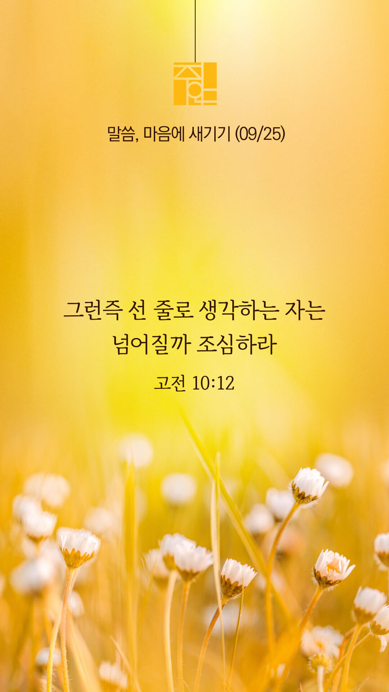

기도실 안내
2022년 09월 25일 (주일)
- 온라인 기도실은 온 회중이 함께 주님 앞으로 나아가는 자리입니다.
- 30분 정도 여유를 가지고 하시기 바랍니다.
- 말씀과 묵상, 찬양과 기도로 나아갑니다.
- 배경 음악이 나올 수 있습니다 볼륨을 조절해주세요.
준비가 되셨으면 아래의 버튼을 눌러주세요.
할렐루야
내 영혼아 여호와를 찬양하라
시 146:1
- 먼저 찬양의 가사를 천천히 읽어 봅시다.
우리는 주의 백성이오니
우리는 주의 백성이오니
주의 그 큰 이름 선포합니다
이곳 어두운 세상에
빛으로 부르셨네
주의 얼굴 구할 때
역사하소서
할렐루야
내 영혼아 여호와를 찬양하라
시 146:1
- 가사를 묵상하며 읽습니다.
교회를 세우시고
이 땅 고쳐주소서
주님 나라 임하시고
주 뜻 이뤄지이다
할렐루야
내 영혼아 여호와를 찬양하라
시 146:1
우리는 주의 백성이오니
by 박종호
위의 찬양이 끝나면 말씀읽기를 눌러주시면 됩니다.
주의 말씀은 내 발에 등이요
내 길에 빛이니이다 (시119:105)
오늘의 말씀입니다.
음악 소리가 크면 조절하시기 바랍니다.

마음의 묵상
고전 10:12
“그런즉 선 줄로 생각하는 자는 넘어질까 조심하라”
1. “선 줄로 생각하는 자”란 어떤 사람일까요?
2. 그런 사람은 어떻게 할까 조심하라고 말씀하나요?
3. “주님, 늘 겸손히 주님만 의지하게 하소서” 간절히 기도합시다.
겸손은 성령의 열매입니다.
회개, 삶의 방향을 바꾸는 결정
회개하는 영혼을 받으시는 주님, 그 사랑에 힘입어 담대히 주님 앞에 나아갑니다.
“서로 친절하게 하며 불쌍히 여기며
서로 용서하기를 하나님이
그리스도 안에서 너희를
용서하심과 같이 하라”
- 에베소서 4:32 -
3분 정도 회개하며 주님 앞에 나아갑니다
사슴이 시냇물을 찾기에 갈급함 같이
시 42:1
- 다음의 말씀을 소리 내어 읽습니다.
[에베소서 4장 26-30절]
26 분을 내어도 죄를 짓지 말며 해가 지도록 분을 품지 말고
27 마귀에게 틈을 주지 말라
28 도둑질하는 자는 다시 도둑질하지 말고 돌이켜 가난한 자에게 구제할 수 있도록 자기 손으로 수고하여 선한 일을 하라
사슴이 시냇물을 찾기에 갈급함 같이
시 42:1
- 다음의 말씀을 소리 내어 읽습니다.
[에베소서 4장 26-30절]
29 무릇 더러운 말은 너희 입 밖에도 내지 말고 오직 덕을 세우는 데 소용되는 대로 선한 말을 하여 듣는 자들에게 은혜를 끼치게 하라
30 하나님의 성령을 근심하게 하지 말라 그 안에서 너희가 구원의 날까지 인치심을 받았느니라
나라와 민족
1. 나라와 민족을 복음으로 변화시켜주소서
하나님 아버지,
모든 것의 주인이신 하나님 한분만을 섬기는 우리 나라와 민족이 되게 하소서. 우리 나라와 민족이 세상의 헛된 것들에 마음을 빼앗기지 않게 하시고, 통회하는 심령으로 주님 앞에 나아와 주님의 위로와 소망을 경험하게 하소서. 그리하여 하나님의 나라가 우리 나라와 민족 가운데 세워지게 하소서.
간절한 마음으로 3분 정도 기도합시다
영혼구원의 사명
2. 주안교회가 영혼구원의 사명을 끝까지 감당하게 하소서
하나님 아버지,
주안의 모든 성도들에게 성령의 기름을 부어주셔서 담대히 주의 말씀을 전하게 하소서. 성도들이 마음 속에 품고 작정한 VIP(전도대상자)들을 만날 때, 성령께서 미리 그들을 찾아가셔서 그들의 마음문이 열리도록 그 마음을 만져주소서. 혹시 VIP들이 거부 반응을 보이더라도 실망하지 않고, 끝까지 그들을 품으며 기도하게 하소서.
간절한 마음으로 3분 정도 기도합시다
예수사랑큰잔치 인도하심
3. 2022년 예수사랑큰잔치를 친히 인도하여 주소서
하나님 아버지,
2022년 예수사랑큰잔치를 통하여 주님을 모르는 많은 영혼들이 주님 앞에 돌아오는 큰 부흥의 역사가 일어나게 하소서. 함께 하는 모든 성도들이 한 영혼의 소중함을 깨달아 알게 하시고, 하나님 아버지의 마음으로 VIP들을 품고 기도하게 하소서. 준비하는 모든 손길과 일정 위에 하늘의 기쁨과 은혜를 더하여 주소서.
간절한 마음으로 3분 정도 기도합시다
예수사랑큰잔치 함께하심
4. 2022년 예수사랑큰잔치의 과정과 결과를 지켜주소서
하나님 아버지,
작정되어진 모든 VIP들의 마음과 환경을 주장하사 2022년 예수사랑큰잔치에 참석하게 하소서. 예수사랑큰잔치에서 세상 어느 곳에서도 경험할 수 없는 예수님의 사랑을 느끼게 하시고, 말씀이 선포되어질 때, 그 자리에 함께 한 모든 이들, 온라인으로 함께 하는 이들도 살아계신 예수님을 만나게 하소서.
간절한 마음으로 3분 정도 기도합시다
말씀에 순종
5. 저희가 말씀에 순종하게 하소서
하나님 아버지,
하나님 아버지, 주안의 성도들이 항상 믿음으로 기도하게 하시고, 기도를 통하여 하나님의 놀라운 능력을 힘입어 선교적 삶을 살게 도와주옵소서. 그리고 모든 사람이 구원받기를 원하시는 아버지의 마음을 알아 잃어버린 영혼들을 위하여 기도하고, 마침내 구원으로 인도하는 기도의 용사들이 되게 하옵소서
간절한 마음으로 3분 정도 기도합시다
감사의 기도
- 오늘 기도를 인도하신 주님께 감사를 올려드립니다.
- 아래의 구절을 읽고 주님께 감사의 마음을 올려드립시다.
“하나님을 따라 의와 진리의 거룩함으로
지으심을 받은 새 사람을 입으라”
- 에베소서 4장 24절 -
고요한 가운데 잠시 침묵하시기 바랍니다.
파송, 세상을 향하여
- 오늘의 온라인 기도를 마쳤습니다.
기도를 들으신 주님께서 평안히 가라 하십니다.
주님께서 우리와 함께 하시니 두려울 것이 없습니다.
새벽을 깨우며
- 새벽기도회 안내입니다.